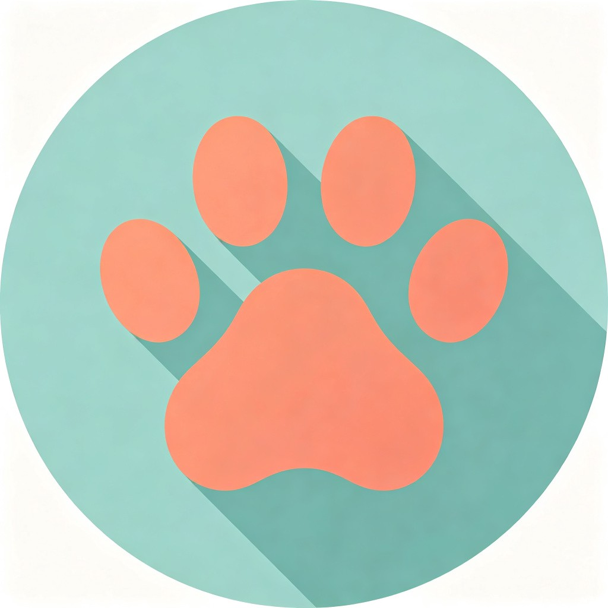
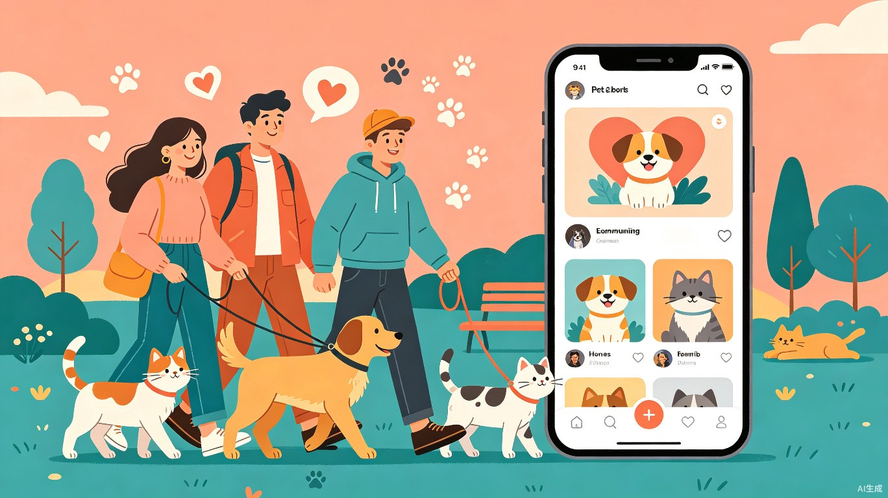

宠物互助圈
让宠物帮你交朋友，让流浪动物也能被"云养"

1项目概述
宠物互助圈是一款融合宠物社交、AI 健康助手和流浪动物救助的社区化 Web 应用。它让宠物成为人与人之间连接的纽带，在提供趣味社交体验的同时，切实解决流浪动物救助的公益痛点。
核心定位
中国宠物数量已突破 1.2 亿只[1]，城镇家庭养宠比例接近 30%。与此同时，每年有数千万只流浪动物需要救助，而救助站资源严重不足，公众参与渠道匮乏。宠物互助圈瞄准这一巨大落差，将宠物社交的娱乐性与流浪救助的社会价值有机结合，打造"玩着做公益"的新型体验。
一句话总结
创意标语
「你的宠物有朋友，流浪的猫也有家」 —— 用 AI 连接每一只毛孩子，让社交有温度、让公益零门槛。
2痛点分析
3核心功能
功能一：AI 宠物社交匹配
为每只宠物创建 AI 驱动的个性档案，智能匹配"最佳玩伴"。
-
🐾
AI 宠物名片 — 录入宠物品种、年龄、性格标签（活泼/安静/友好/胆小）、喜好等信息，AI 自动生成风格化"宠物名片"和社交文案
-
🔍
性格匹配算法 — 根据宠物性格、体型、活动范围，AI 推荐附近性格相合的宠物玩伴，匹配度以百分比直观展示
-
📍
智能遛狗路线 — 推荐宠物友好公园、咖啡馆、散步路线，并标注"常出没的同城宠物朋友"
-
📅
宠物聚会 — 发起或加入社区宠物聚会，AI 自动筛选时间地点，生成活动邀请海报
功能二：爱心币云养救助站
将"日常签到"转化为"真实捐赠"，让公益触手可及。
-
每日任务赚爱心币 — 分享宠物日常、完成养宠小知识答题、签到打卡，即可积累"爱心币"
-
云养流浪动物 — 选择一只救助站的流浪动物"云养"，爱心币进度条实时显示"还差 50 币就能给它买一袋猫粮"
-
透明化捐赠追踪 — 用户兑换的物资直接显示捐赠去向（XX 救助站收到猫粮 10kg），建立信任闭环
-
爱心排行榜 — 社区/城市/全国爱心排行榜，激励持续参与，营造"做公益很酷"的社区氛围
功能三：AI 宠物健康助手
拍照即可获得初步健康建议，降低宠物就医焦虑。
-
症状拍照识别 — 上传宠物异常症状照片（如皮肤红肿、眼睛分泌物），AI 给出可能的原因说明和紧急程度评估
-
附近宠物医院推荐 — 根据症状类型和紧急程度，推荐最近的、对口专科的宠物医院，并提供导航
-
健康日历 — AI 提醒驱虫、疫苗、体检等时间节点，自动关联宠物档案生成个性化健康计划
4娱乐体验设计
5社会服务价值
价值一：降低公益参与门槛
传统公益需要捐款或到现场，门槛高。宠物互助圈将公益融入日常互动——签到、答题、分享宠物日常都能转化为对流浪动物的实际帮助。这种"微公益"模式让每个养宠人都能轻松参与。
价值二：建立流浪动物救助志愿者网络
平台可以快速组建"TNR 志愿者群""领养推广群"等社区组织。当救助站发布紧急需求（如"发现一窝新生小猫需要 foster 家庭"），AI 自动推送给附近匹配的志愿者，大幅提升救助响应速度。
价值三：缓解孤独人群社交困境
对空巢老人而言，宠物是唯一日常陪伴。通过平台匹配同龄的宠物主，线下遛狗变社交，线上交流有话题，有效缓解城市独居人群的社交隔离。
价值四：减少宠物弃养
AI 健康助手提供免费初步咨询，降低因经济原因延误治疗导致的弃养。同时，"困难宠物主帮扶计划"可通过爱心币体系为经济困难宠物主提供基础物资援助。
6技术方案
开发工具
全部使用 TRAE Work（Work 模式 + Code 模式）和 TRAE IDE 完成，符合大赛创作工具要求。
| 模块 | 技术栈 | 说明 |
|---|---|---|
| 前端界面 | HTML + CSS + JavaScript | 响应式 Web 应用，适配 PC/手机浏览器 |
| AI 能力 | TRAE 内置 AI 模型 | 宠物名片生成、性格匹配、症状分析、趣味文案 |
| 用户数据 | localStorage / JSON | 初赛 Demo 使用本地存储，复赛可接入云数据库 |
| 地图/位置 | 高德地图 JS API（免费版） | 附近宠物、遛狗路线、宠物医院定位 |
| 语音处理 | Web Speech API | 宠物声音翻译器的录音与情绪分析 |
系统架构
flowchart TB
subgraph 前端["用户端 (Web)"]
A[宠物档案页] --> B[社交匹配页]
A --> C[爱心币中心]
A --> D[健康助手]
B --> E[遛狗地图]
B --> F[宠物聚会]
end
subgraph AI引擎["TRAE AI 引擎"]
G[文案生成] --> A
H[匹配算法] --> B
I[症状分析] --> D
J[声音识别] --> K[宠物翻译器]
end
subgraph 数据层["数据层"]
L[(宠物数据库)] --> A
M[(用户行为)] --> C
N[(救助站信息)] --> C
O[(宠物医院)] --> D
end
A -- 用户数据 --> L
B -- 位置信息 --> H
C -- 捐赠数据 --> N
D -- 位置查询 --> O
7用户旅程
flowchart LR
S[注册/登录] --> U1[创建宠物档案]
U1 --> U2[AI 生成宠物名片]
U2 --> U3[查看匹配推荐]
U3 --> U4{选择操作}
U4 --> V1[发起遛狗约会]
U4 --> V2[参加知识闯关]
U4 --> V3[拍照问诊]
U4 --> V4[云养流浪动物]
V1 --> U5[线下遛狗社交]
V2 --> U6[赚取爱心币]
V3 --> U7[获取健康建议]
V4 --> U8[捐赠物资给救助站]
U5 --> U9[发布宠物日记]
U6 --> U8
U9 --> U10[解锁成就徽章]
8Demo 规划
初赛 Demo（6.16 - 7.15）
初赛核心目标是做出可体验的 Demo，展现创意的核心价值和交互体验。
| 功能模块 | 实现范围 | 体验方式 |
|---|---|---|
| 宠物档案创建 | 完整流程：填写信息 → AI 生成名片 → 预览/分享 | 表单 + AI 实时生成 |
| AI 社交匹配 | 模拟数据展示匹配结果，展示匹配度百分比 | 滑动卡片式浏览 |
| 宠物人格测试 | 8 道题完整流程，生成 MBTI 风格报告 | 答题 + AI 生成报告 |
| 爱心币系统 | 签到 + 知识答题赚取爱心币，兑换捐赠 | 进度条 + 动画反馈 |
| AI 健康助手 | 上传照片 → AI 分析 → 展示建议和医院推荐 | 拍照上传 + AI 响应 |
复赛完整产品（7.21 - 8.9）
在初赛基础上迭代完善，新增以下功能：
-
🗺️
遛狗地图 — 接入高德地图，展示附近宠物友好地点和同城宠物
-
救助站入驻 — 模拟救助站管理后台，展示真实救助站数据和流浪动物信息
-
🎤
宠物声音翻译器 — 录音上传，AI 情绪分析 + 趣味文案
-
数据看板 — 展示平台累计帮助流浪动物数、爱心币捐赠总量等公益数据
9竞争优势
市面上有宠物社交 App（如小红书宠物圈、宠物相亲），也有宠物健康工具，还有公益捐赠平台。但没有一个产品将三者融合——宠物互助圈通过 AI 把"社交娱乐"和"公益救助"串联为同一体验闭环，形成独特的"玩着做公益"模式。
| 对比维度 | 现有产品 | 宠物互助圈 |
|---|---|---|
| 社交匹配 | 人工筛选，效率低 | AI 性格匹配，精准推荐 |
| 公益参与 | 需主动捐款，门槛高 | 日常签到答题即可捐赠，零门槛 |
| 健康咨询 | 碎片化信息，不可信 | AI 拍照问诊 + 医院导航，一站式 |
| 娱乐互动 | 内容消费为主 | AI 生成宠物名片/人格测试/声音翻译，高参与度 |
| 用户粘性 | 低频使用 | 每日签到 + 宠物日记 + 知识闯关，形成习惯 |
10开发计划
11赛道选择策略
推荐赛道组合
主赛道：社会服务 — 宠物互助圈的核心社会价值在于流浪动物救助和社区互助网络建设，与"社会服务"赛道高度契合。
附加赛道：公益专题（可叠加） — 流浪动物救助属于公益范畴，可叠加公益附加赛道参与评选。附加赛道设有独立专项奖 5 万元，与主赛道奖项可兼得，最大化获奖机会。